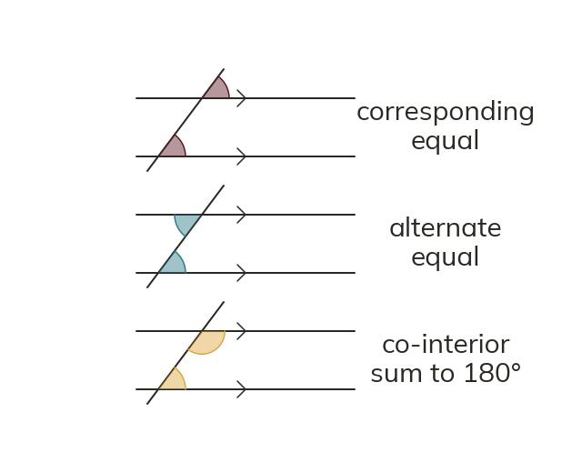

Three pairs, two rules
Across parallel lines, corresponding and alternate angles are equal. Co-interior angles sum to 180°.
Where a transversal crosses parallel lines, corresponding and alternate angles are equal. Co-interior angles sum to 180°.